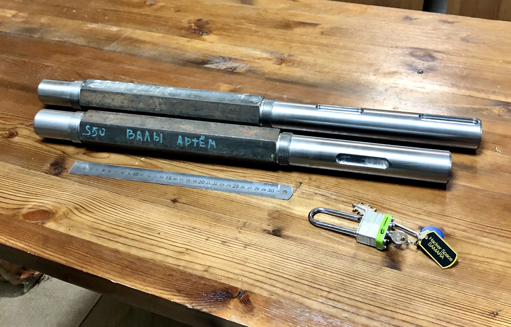
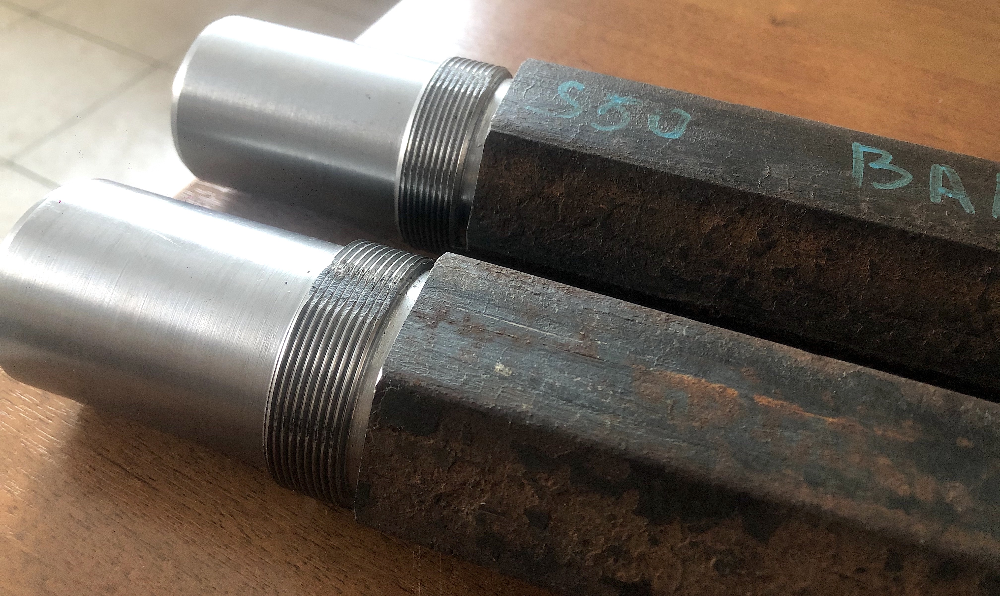
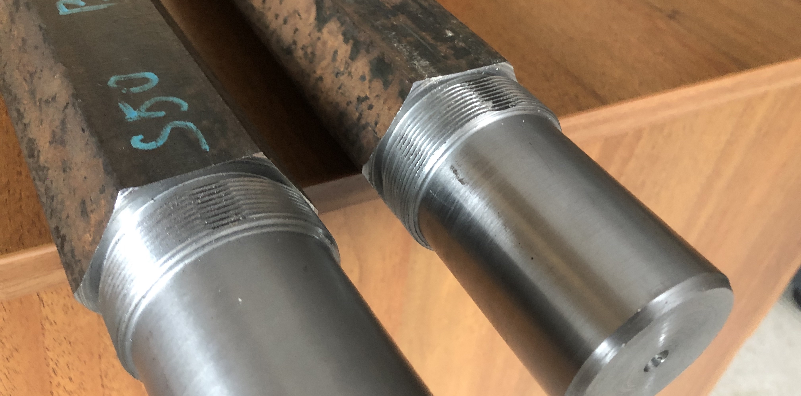
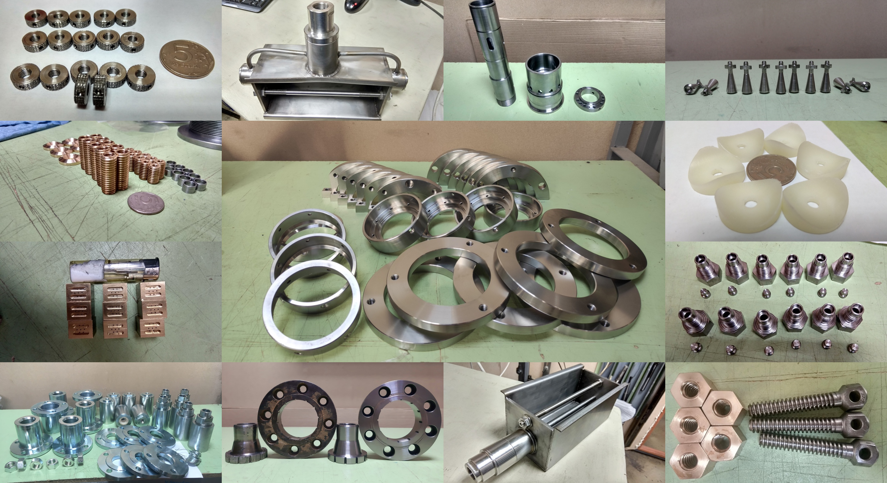

Programming, robotics, traveling
Шреддер для пластика #4: Редуктор (новости) и точёные валы
Навигация по проекту:
- Выбор мотор-редуктора
- Внешний осмотр редуктора, проверка размеров
- Разборка редуктора NMRV150
- Редуктор (новости) и точёные валы
Редуктор
В прошлой статье от 13 декабря 2020 года я рассказывал как мы разобрали редуктор и что там увидели. После этого мы поехали на выходные за город, чтобы в пристрое моего отца отмыть редуктор от масла в обезжиривателе и других едко пахнущих жидкостях.

Не сказать что получилось супер идеально. На стенках все равно местами остались вкрапления бронзовой крошки и масленистых растворов.
После чистки вскрылось то, что на выходном зубчатом колесе, а точнее на ступице разбилось посадочное место под подшипник. Если честно в тот момент я совсем расстроился, касаемо произведенной покупки. Для решения проблемы была идея сделать засечки на ступице под посадочным местом, чтобы подшипник сел плотно, однако с решением этого вопроса решили отложить. И хорошо)
Затем мы начали искать манжетные уплотнения выходного вала. Цены очень разнились от 100 до 2000 рублей за штуку. Но после пары дней анализа продавцов подобных изделий, я наткнулся на компанию которая занимается производством резинотехнических изделий в Самаре – LEOTEK VOLGA.
Огромным плюсом стало то, что их склад находится в Самаре и они согласились просто за наличку продать несколько манжет.

В итоге все манжеты обошлись нам в 194 рубля:
- 65х90х10 (1.2) гост 8752-79 - 41р - 1 шт
- 90х120х10 (1.2) гост 8752-79 - 51р - 3 шт
Как вывод: советую обратить внимание на локальных производителей изделий. А не искать перекупов, тем более в других регионах.
Далее мы поехали на завод забирать валы, которые нам выточили наши партнеры специализирующиеся на металло-обработке. А заодно захватили венец редуктора, чтобы получить комментарии касаемо пасадочных мест под подшипники и износа бронзового венца. Как нам рассказали: износ не критичный и у редуктора есть значительный ресурс. А что касаемо посадочных мест, то их нужно гильзовать: стачивать часть металла со ступицы и усаживать другую железку поверх.
Кстати с одного из торцов ступицы были небольшие задиры, снятие подшипника из-за которых было невозможным. После гильзования эта проблема должна решиться.
Открытым остается вопрос нужны ли новые подшипники. Пока мы остановились на том, что после гильзования взглянем подробнее на имеющиеся.
Позже я получил комментарий от ещё одного специалиста, который просмотрев видео, что мы снимали в предыдущей части, сказал ряд вещей:
- Износ на венце должен быть, как и крошка в масле. Главное чтобы не было задиров на червяке.
- Люфт между червяком и венцом – должен быть, он служит как термобарьер.
- В принципе масло можно лить любое трансмиссионное высокотемпературное.
- Редуктор должен грется до 80 градусов, главное не позволять ему перегреваться выше 150 градусов.
- Масло вполне нормальное – можно было эксплуатировать на нём дальше.
- Подшипник на валу должен плотно запресован люфта быть не должно, как и подтеков масла.
Как итог, мы решили:
- Гильзовать ступицу
- Поменять масло
Валы
Второй крупный шаг который мы сделали, помимо приобретиния и работ по мотор-редуктору – точние валов шреддера. Эту работу мы заказали работу у наших партнеров – производственного кооператива "ТехноСпектр".
Нам предложили несколько вариантов изготовления:
- Точение из шестигранника (2 вала за 7000₽)
- Точение шестигранника (2 вала за 11500₽)
Что плохо в первом варианте, так это то, что исходный шестигранник может быть достаточно кривым.
Также оба эти варианта можно было бы закалить и произвести пост-обработку по выверению размеров +3000₽.
По проекту Precious Plastic валы изготавливались из шестигранника из обычной стали марки C45 без последующей термообработки. Это не противоречило нашей логики и так мы и сделали.

Однако у данного способа оказался минус: ценрововка на станке производилась по двум граням и на изделии центр получился немного смещённым относительно центра точеного цилиндра.


Пока сложно сказать на сколько это будет критичным, так что подождём и посмотрим что получится на выходе.
Производственный кооператив “ТехноСпектр”
Бонусом прорекламирую наших партнеров. Ребята занимаются изготавлением сложных, высокоточных деталей и узлов. Применяют передовые технологии металлообработки и современные режущие и измерительные инструменты. Был у них на производстве – очень понравилось.

Контакты для связи:
- info@techno-spectrum.ru
- +7 (846) 219-29-19